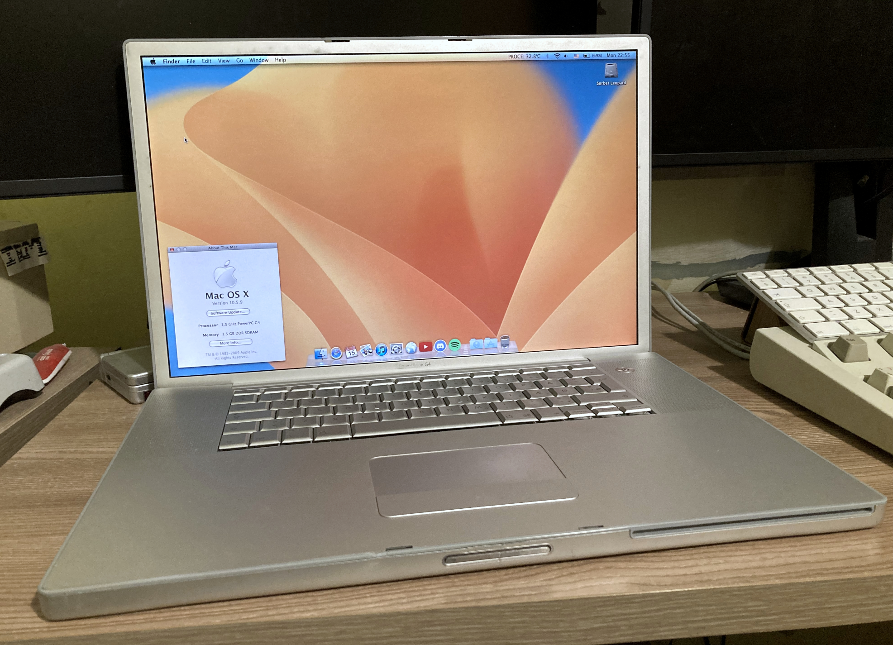

|  | CPU: PowerPC G4 (7447A) 1.5 GHzMemory: 2 GB DDR SDRAMStorage: 256 GB SSDGPU: ATI Radeon 9700 with 64 MB VRAMKeyboard Layout: DanishCondition: Working perfectly |
It has some dents and scratches but works perfectly. This has to be my favourite laptop of all time. It was my main laptop but I recently upgraded so now it gets less use but is still used. It's currently dual-booting Sorbet Leopard and Tiger but I mostly use Leopard on it. It originally came with 768 MB of RAM and an 80 GB Hitachi Travelstar HDD. I upgraded the RAM to 1.5 GB and after a while the HDD died so I had to replace it. Both tasks were pretty easy because these 17" PowerBooks are really easy to take apart.
This is my main PowerPC machine and I take it everywhere with me, because of that it has travelled the world a little and has visited a few countries, those being Belgium, Bulgaria, Serbia, Hungary and Denmark.
05/11/22 - Hard Drive has been upgraded to an 80 GB Fujitsu from my TiBook.
22/06/24 - Hard Drive has been upgraded to a 256 GB mSATA SSD with an adapter as well as RAM, going from 1.5 to 2 GB.


{kind=link}